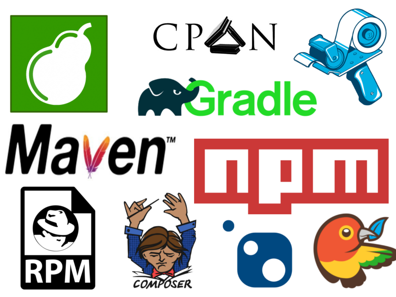

Depende, ¿de qué depende?
10 claves en la gestión de dependencias
con Javascript
¿Quién soy?
Soy
Alberto Varela y trabajo
como desarrollador en
github.com/artberri | twiter.com/artberri | berriart.com | alberto@berriart.com
1/3 of US bandwidth is used by Netflix...
— I Am Devloper (@iamdevloper) 14 de septiembre de 2017
the rest is used by `rm -rf node_modules && npm install`

UN POCO
DE HISTORIA
Primeros pasos
- Prehistoria - README (con suerte)
Servidores FTP, listas de correo,... - 1984 - ./configure + make
El primer programa que se distribuyó con un script 'configure' fue rn por Larry Wall. - 1991 - Autoconf
Validaba dependencias en base a características no a números de versión, creado por David Mackenzie.
Introduciendo los repositorios
- 1993 - dpkg
Aún utilizado por distribuciones Debian, por Ian Jackson. - 1997 - rpm
Aún utilizado por distribuciones basadas en Red Hat, por Erik Troan y Marc Ewing.
Específicos de lenguaje
- 1995 - CPAN
Creado por los miembros de la lista de correo perl-packrats para gestionar módulos de Perl. - 1999 - PEAR
Primer gestor de paquetes de PHP, por Stig S. Bakken. Activo pero en desuso.
Entornos y fichero de requerimientos
- 2007 - Virtualenv
No es un gestor de paquetes, pero solucionó el problema de desarrollar varias aplicaciones que requieren de diferentes versiones en Python. Por Ian Bicking. - 2008 - Pip
Vino a sustituir el easy_install de Python, introdujo el fichero 'requirements.txt' que sirve para listar las dependencias de una aplicación, también por Ian Bicking.
El fichero de 'lock'
- 2010 - Bundler
Yehuda Katz introduce el concepto de Gemfile.lock en el nuevo gestor de paquetes que está desarrollando para Ruby. - 2012 - Composer
Revolucionó la gestión de dependencias junto con Packagist en el mundo PHP. Incluye lockfile y diferenciación entre dependencias de desarrollo y runtime. Por Nils Adermann and Jordi Boggiano.
Versionado semántico
- 2011 - Semver
A pesar de que no era un método nuevo, fue Tom Preston-Werner, creador de Gravatars y cofundador de GitHub quien redactó la primera especificación de Semver intentando poner algo de orden en lo que ya era considerado el "dependency hell".
Dependencias Javascript
- 2012 - Bower
Twitter presenta y libera su gestor de dependencias para el mundo web. Bower se declaró obsoleto en 2016 recomendando el uso de npm o yarn. - 2014 - npm
El gestor de dependencias de javascript por excelencia, nació de una idea de Isaac Schlueter de 2009, quien sigue como CPO en npm, inc. a día de hoy. - 2016 - yarn
Suplía ciertas carencias de npm que ya se encontraban en gestores de dependencias de otros lenguajes.
Dependency Pokemons
NPM Yarn ¡te elijo a ti!

Conceptos: Repositorio
- El repositorio central y público 'oficial' es el Npm Registry (también usando Yarn). Es gestionado por npm, inc. y da servicio gratuíto para paquetes públicos.
- Puedes crear tu propio servidor para que actue como repositorio e incluso como repositorio proxy o contratarlo a un tercero.
Conceptos: Paquete
- Un paquete npm es uno o varios ficheros comprimidos en un .tgz entre los que se incluye un fichero package.json con la definición de dependencias y otros datos.
- Un repositorio git o un directorio que incluya un fichero package.json también pueden ser considerados paquetes al poder ser referenciados como dependencias.
- Un paquete de npm no tiene por qué contener ficheros javascript. Existen módulos que por ejemplo solo incluyen ficheros CSS.
- Un paquete de npm es inmutable.
Conceptos: Lista de dependencias
- El fichero package.json es el standard para la declaración de dependencias 'locales'.
- Podemos definir diferentes tipos de dependencias: runtime, development, peer, optionals, bundled.
- Podemos especificar versiones concretas o rangos.
Conceptos: El fichero lock
- El fichero package-lock.json (yarn.lock,...) aporta estabilidad a los proyectos y delara las dependencias de forma determinista.
- Se trata de un fichero autogenerado que no se debería editar manualmente.
- Fue el gestor de paquetes yarn el primero que introdujo este concepto en el mundo node.js.
Conceptos: La interfaz de consola (CLI)
- npm es el gestor de paquetes por defecto de node.js y viene incluido en la instalación.
- Existen otras herramientas de consola (yarn, pnpm, tink,...) pero todas ellas usan NPM Registry como repositorio por defecto.
Las claves
Clave 1: Utiliza scoped packages
- 🐧 Te permite usar nombres reconocibles
- 🤚 Nadie más puede publicar bajo ese nombre
- 🔗 Puedes asociar un scope con un registry diferente
Se hace utilizando de nombre: @org/project
@acme/myapp
Se instala como cualquier otro paquete
npm install @acme/myapp
"dependencies": {
"@acme/myapp": "^1.3.0"
}
Puedes apuntar todo el scope a un registro propio (.npmrc .yarnrc.yml)
npm config set @acme:registry http://registry.acme.com
yarn config set npmScopes.acme.npmRegistryServer "http://registry.acme.com"
Clave 2: Haz dependencias explícitas
- 📊 Hay un 99% de probabilidades de que un paquete no deba ser instalado como global, si lo haces deja de ser una dependencia explícita
- ✂️ No copies y 📋 pegues ciegamente de los README
- 🔧 Sí, las herramientas de desarrollo también deben ser dependencias explícitas.
Ejemplo de mal "Getting started": tslint
npm install --global tslint typescript
yarn global add tslint typescript
Simplifican para poder ejecutar tslint directamente en consola
tslint --init
tslint -c tslint.json 'src/**/*.ts'
Pero esto es un problema porque dependiendo del momento de la instalación cada desarrollador o nuestra máquina de CI podrá tener una versión diferente.
Deberíamos añadir esas dependencias como desarrollo.
npm install --save-dev eslint typescript
yarn add -D eslint typescript
Y ejecutar la versión local
./node_modules/.bin/eslint ...
O también podemos añadirlo como script npm
"scripts": {
"lint": "eslint src"
}
npm run lint
yarn run lint
Clave 3: Haz explícita tu versión de node
- 👉 Se debería hacer explícita la compatibilidad con node
- ⚙ Y si fuese necesario la versión de
npm
yarn
- ⚒ U otras deps de
process.versions
- 💻 O un sistema operativo o arquitectura concreta
"engines": {
"node": ">=10 <14",
"npm": ">=7"
}
"engines": {
"node": ">=10 <14",
"yarn": "^2.0.0",
"zlib": "^1.2.8"
}
Clave 4: Elije bien el tipo de dependencia
- dependencies
- Usadas en run time, se instalan siempre.
- devDependencies
- Se instalan solo con
npm install
yarn install
. - NO se instalan con
npm install --production
yarn install --production
. - NO se instalan cuando te usan como dependencia.
- peerDependencies
- NO se instalan automáticamente.
- Se suelen usar en plugins para referenciar al 'host'.
Clave 4: Elije bien el tipo de dependencia
- optionalDependencies
- Se instalan como una dependencia, pero no falla si no puede instalarla por requerimientos
- El ejemplo más visto: 'fsevents'
SKIPPING OPTIONAL DEPENDENCY: Unsupported platform for fsevents@1.0.14 - bundledDependencies
- Se deben empaquetar junto al código propio al hacer publish.
Clave 4: Elije bien el tipo de dependencia
- ❗ Es SUPER IMPORTANTE cuando estás haciendo una librería
- 🟡 Es IMPORTANTE cuando estás haciendo una app Node.js
- 🟩 Puede ser IMPORTANTE cuando estás haciendo una web
Clave 5: Utiliza rangos de versiones
- 📊 Hay un 99% de posibilidades de que no necesites una versión concreta de una dependencia
- 🔓 Explicitar versiones concretas en el package.json NO definirá todas tus dependencias de manera determinista
- 🔺 Si haces una librería, intenta referenciar desde la versión mínima sin vulnerabilidades que soporte la API que usas
Clave 5: Utiliza rangos de versiones
Formatos
Caret ranges:
"^1.2.3" Meaning: ">=1.2.3 <2.0.0"
Tilde ranges:
"~1.2.3" Meaning: ">=1.2.3 <1.3.0"
"~1.2" Meaning: ">=1.2.0 <1.3.0"
"~1" Meaning: ">=1.0.0 <2.0.0"
X ranges:
"1.2.X" Meaning: ">=1.2.0 <1.3.0"
"1.X" Meaning: ">=1.0.0 <2.0.0"
Or ranges:
"^1.2.3 || ^2.4.1" Meaning: ">=1.2.3 <2.0.0 || >=2.4.1 <3.0.0"
Clave 5: Utiliza rangos de versiones
- Por defecto
npm i
yarn add
usa carets (^) - Los carets están bien en general
- ¡OJO! 👇
Los carets son poco recomendables en versiones0.X.X
, mejor tilde (~0.2.3
) o fija
Clave 6: Usa Semantic versioning
- 🔴 Hazlo siempre, siempre, siempre que hagas librerías
- 📛 Tu API define la versión y no el marketing. Si rompes API, subes major.
- 🧑💻 La responsabilidad de los desarrolladores con esto es lo más importante para la estabilidad del sistema.
- ↗ Empieza en la 1.0.0. Por favor, por favor, por favor...
Clave 7: Versiona siempre tu lock file
- 🔒 Este fichero define todas tus dependencias de manera determinista
- 📤 Haz commit siempre de este fichero.
- 📝 No se edita el fichero a mano
- 🗯 No se resuelven los conflictos a mano (npm-merge-driver)
Clave 7: Versiona siempre tu lock file
- El lock file no se publica con
npm publish
yarn publish
porque no se debe publicar - Solo tendría sentido publicar el lock file en una herramienta como una CLI. Para eso existe el
fichero
npm-shrinkwrap.json
(no soportado por yarn). También con cualquier paquete cuya intención sea ser instalado de forma global.
Clave 8: Actualiza con criterio
- 🕐 Con
npm outdated
yarn outdated
puedes obtener información - 🦠 Vigila las vulnerabilidades (obtén info con
npm audit
yarn npm audit
). - ❓ ¿De verdad necesitas esa nueva funcionalidad?
- 🏃 Ojo con la falta de soporte, esto va muy rápido
Clave 8: Actualiza con criterio
Actualizar solo una dependencia:
npm update <paquete>
yarn upgrade <paquete>
Actualizará el paquete respetando el package.json (puedes modificarlo previamente)npm install <paquete>@latest
yarn upgrade <paquete> --latest
Actualizará el paquete a la última version
No olvides commitear el lock file.
Clave 8: Actualiza con criterio
Como actualizar todas las dependencias:
No lo hagas. Actualiza con criterio ;)
- Identifica las dependencias desactualizadas
npm outdated
yarn outdated
- Actualiza versiones en tu package.json si es necesario
- Ejecuta
npm update
yarn upgrade
- No olvides commitear el lock file.
Clave 9: Usa npm ci yarn --frozen-lockfile
- 🟫 A diferencia de npm install solo instala proyectos enteros, no dependencias
- 🟨 Solo usa el
package-lock.json
yarn.lock
. Se asegura de que está en control de versiones - 🟩 Da error si el
package-lock.json
yarn.lock
no es coherente con elpackage.json
- 🟦 Nunca actualiza los ficheros
package.json
opackage-lock.json
yarn.lock
- 🟪Imprescindible para CI
- ⬛ Borra el directorio
node_modules
si ya existe
Clave 10: No necesitas rm -rf node_modules && npm i yarn
- 🔄 Era una operación demasiado habitual hasta que hubo lock file (reproducir fallos que sucedían en CI o a nuevos compis).
- 👃 A día de hoy, si necesitas hacerlo puedes tomarlo como un 'smell'. Probablemente hay algo que arreglar.
- ⛄
npm ci
yarn --frozen-lockfile
debería ser suficiente y además haría comprobaciones. - 🏗
npm rebuild
yarn rebuild
es otra alternativa si por ejemplo has actualizado la verión de Node.js
Las claves
- Utiliza scoped packages
- Haz dependencias explícitas
- Haz explícita tu versión de node
- Elije bien el tipo de dependencia
- Utiliza rangos de versiones
- Usa Semantic versioning
- Versiona siempre tu lock file
- Actualiza con criterio
- Usa npm ci
- No necesitas rm -rf node_modules && npm i